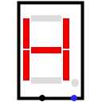
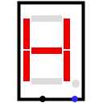

十六进制数码显示
十六进制数码显示
| 库: | 输入/输出 |
| 介绍: | 2.2.0 |
| 外观符号: |
 

|
行为
使用七段显示器，显示与四位输入相对应的十六进制数字。 如果任何输入不是 0/1（浮动或错误），则显示保持空白（所有段关闭）。 一个单独的一位输入控制小数点的显示。
引脚
- 南边缘，左起第一个（输入，位宽 4）
- 该输入被解释为无符号的四位数字，并显示相应的十六进制数字。
- 南边缘，左数第二个（输入，位宽 1）
- 控制小数点。 如果未连接，则小数点保持关闭状态。
属性
- 关于颜色。
- 当显示段和小数点打开时用于绘制显示段和小数点的颜色。 （默认为红色）。
- 颜色。
- 当显示段和小数点关闭时用于绘制显示段和小数点的颜色。 （默认为灰色）。
- 背景
- 用于绘制显示器背景的颜色（默认为透明）。
- 有小数点：
-
如果
yes
小数点可用，如果no
小数点隐藏。 - 标签
- 与组件关联的标签内的文本。
- 标签位置
- 标签相对于组件的位置。
- 标签字体
- 用于呈现标签的字体。
- 标签可见
- 显示或不显示标签。
Poke 工具行为
无
文本工具行为
无
返回 电路元件库参考手册